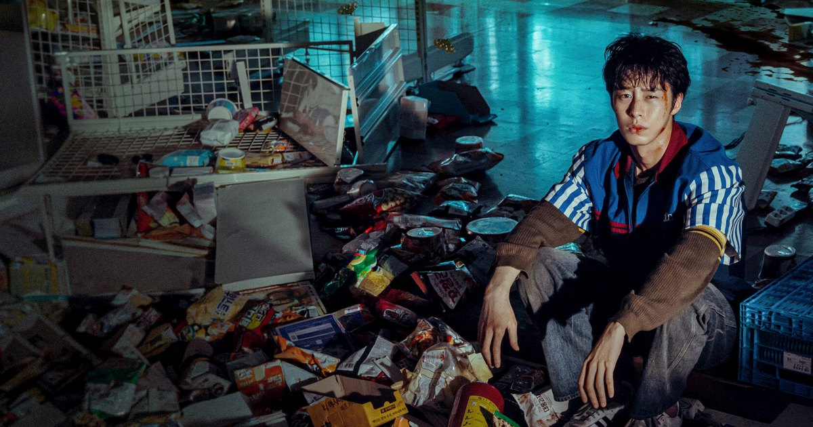

공개 하루 만에 넷플릭스 1위 '꿀알바', 발설 금지 규칙은 지키며 소개해요
핼러윈 주말에 볼 무서운 시리즈, 고르고 계세요? 넷플릭스 '꿀알바'가 공개 하루 만에 국내 시리즈 순위 맨 위에 올랐다는 소식이 들려왔어요.
사진: 넷플릭스 · 원본

핼러윈 주말에 볼 무서운 시리즈, 고르고 계세요? 넷플릭스 '꿀알바'가 공개 하루 만에 국내 시리즈 순위 맨 위에 올랐다는 소식이 들려왔어요.
사진: 넷플릭스 · 원본